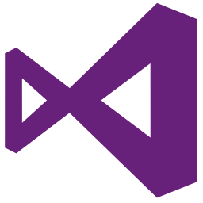

İşler
Hedefi olmayan gemiye hiçbir rüzgar yardım etmez.
Siz hayal edin biz yapalım.

Microsoft Visual Studio
Visual Studio, Microsoft tarafından üretilen ve konsollar, grafik kullanıcı arayüzleri, Windows formları, Web servisleri ya da Web uygulamaları oluşturmak için kullanılan bir IDE’dir. Visual Studio programı içerisinde yalnızca Microsoft Windows tarafından desteklenen yerel kodlar kullanılmaktadır.Visual Studio son derece fonksiyonel ve şık ara yüz tasarımına sahiptir.
Visual Studio her ne kadar bir geliştirme ortamı olsa dahi Eclipse gibi bu ortam içerisinde birçok programlama dilini kullanamıyor, sadece Visual Studio tarafından desteklenen diller üzerinden çalışabiliyorsunuz. Visual Studio yazılımının desteklediği programlama dilleriyse şunlardır;:
- C
- C++
- C#
- Visual Basic .NET
- F#
- Fossil
- M
- Python
- HTML/XHTML/CSS
- JavaScript

SQL Server Management Studio
SQL Server Management Studio (SSMS) ilk ile başlatılan bir yazılım uygulamasıdır , Microsoft SQL Server 2005 , yapılandırılması, yönetme ve içindeki tüm bileşenleri verilmesi için kullanılır , Microsoft SQL Server . SQL 2000 veya öncesinde Enterprise Manager'ın halefidir . Araç, hem komut düzenleyicilerini hem de sunucunun nesneleri ve özellikleriyle çalışan grafik araçlarını içerir.
SSMS'nin temel bir özelliği, kullanıcının sunucu içindeki nesnelere göz atmasına, seçim yapmasına ve üzerinde işlem yapmasına olanak tanıyan Nesne Gezgini'dir.Ayrıca ücretsiz olarak indirilebilecek ayrı bir Express sürümü de gönderdi, ancak SSMS'nin son sürümleri herhangi bir SQL Server Express örneğine tam olarak bağlanıp bunları yönetebiliyor. Microsoft ayrıca SQL Server'ın eski sürümleri için geriye dönük uyumluluk da ekledi, böylece daha yeni bir SSMS sürümü SQL Server örneklerinin eski sürümlerine bağlanabildi. Ayrıca Microsoft SQL Server Express 2012 ile birlikte gelir veya kullanıcılar ayrı olarak indirebilir.
Sürüm 11'den başlayarak, uygulama, kullanıcı arabirimi için WPF kullanarak Visual Studio 2010 kabuğuna dayanıyordu . Sürüm 18 ve sonrası, Visual Studio 2017 Yalıtılmış Kabuğu temel alır .
Haziran 2015'te Microsoft, SQL Server veritabanı motoru sürümlerinden bağımsız olarak SSMS'nin gelecekteki sürümlerini yayınlama niyetini açıkladı.

HTML
Köprü Metni Biçimlendirme Dili ( HTML ), bir web tarayıcısında görüntülenmek üzere tasarlanmış belgeler için standart biçimlendirme dilidir . Basamaklı Stil Sayfaları (CSS) gibi teknolojiler ve JavaScript gibi komut dosyası dilleri tarafından desteklenebilir . Web tarayıcıları bir HTML belgeleri almak web sunucusu veya yerel depolama ve işlemek multimedya web sayfalarına belgeleri. HTML, bir web sayfasının yapısını anlamsal olarak tanımlar ve orijinal olarak belgenin görünümü için ipuçları içerir. HTML öğeleri , HTML sayfalarının yapı taşlarıdır. HTML yapıları ile görüntüler ve etkileşimli formlar gibi diğer nesneler oluşturulan sayfaya gömülebilir. HTML, başlıklar, paragraflar, listeler, bağlantılar , tırnak işaretleri ve diğer öğeler gibi metnin yapısal anlamlarını göstererek yapılandırılmış belgeler oluşturmak için bir araç sağlar . HTML öğeleri açılı ayraçlar kullanılarak yazılan etiketlerle tanımlanır . İçeriği gibi ve doğrudan sayfaya içerik getiren etiketler . Gibi diğer etiketler img />input />p> çevirin ve belge metni hakkında bilgi verin ve diğer öğeleri alt öğeler olarak içerebilir. Tarayıcılar HTML etiketlerini görüntülemez, ancak bunları sayfanın içeriğini yorumlamak için kullanır. HTML, JavaScript gibi komut dosyası dillerinde yazılmış ve web sayfalarının davranışını ve içeriğini etkileyen programları gömebilir . CSS'nin dahil edilmesi, içeriğin görünümünü ve düzenini tanımlar. HTML'nin eski koruyucusu ve CSS standartlarının mevcut koruyucusu olan World Wide Web Konsorsiyumu (W3C), 1997'den beri açık sunum HTML'si üzerinde CSS kullanımını teşvik etmiştir.
Microsoft Visual Studio Code
Visual Studio Code Microsoft tarafından Windows, Linux ve MacOS için geliştirilen bir kaynak kodu düzenleyicisidir. Hata ayıklama, gömülü Git kontrolü, sözdizimi vurgulama, akıllı kod tamamlama, snippet'ler ve kod yeniden yapılandırma desteği içerir. Ayrıca özelleştirilebilir, böylece kullanıcılar editörün temasını, klavye kısayollarını ve tercihlerini değiştirebilir. Resmi indirme işlemi tescilli bir lisans altında olmasına rağmen, ücretsiz ve açık kaynaktır. Visual Studio Kodu, Blink (Web motoru) düzen motorunda çalışan masaüstü için Node.js uygulamalarını dağıtmak için kullanılan bir çerçeve olan Electron'a dayalıdır. Electron çerçevesini kullanmasına rağmen yazılım Atom'u kullanmaz ve bunun yerine Visual Studio Team Services'te (eski adıyla Visual Studio Online) kullanılan aynı düzenleyici bileşenini ("Monaco" kod adı) kullanır. Visual Studio Kodu, 29 Nisan 2015 tarihinde Microsoft tarafından 2015 Build konferansı'nda ilan edildi. Kısa süre önce bir Önizleme yapısı kuruldu. 18 Kasım 2015'te, Visual Studio Kodu, MIT Lisansı ve onun kaynak koduna göre GitHub'a gönderildi. Uzatma desteği de ilan edildi. 14 Nisan 2016'da Visual Studio Code, genel önizleme aşamasını bitirdi ve web'e açıldı.
Microsoft Visual Studio Form Application
Windows Forms Application, Microsoft Windows'un programlarda kullandığı form sisteminin adıdır. C,C++ Vb. dillerde bu tür formları kullanmak için yada tamamen bu formlara dayalı olarak program yapmak için windows kütüphaneleri kullanılır. Windows Forms Application deyimi en çok .net platformuna bağlı programlama dillerinin derleyicilerinde görülür.Visual Studio, VB6 , C# gibi dillerin, microsoft tarafından geliştirilen derleyicilerinde, bu seçeneği kullanarak Form tabanlı programlar yazılabilir. Windows'ta bulunan hemen hemen tüm programlar, Form sistemini kullanılır.

PHP
PHP : Hypertext Preprocessor (Türkçe: Üstünyazı Önişlemcisi) (Aslen: Personal Home Page - Kişisel Ana Sayfa) , internet için üretilmiş, sunucu taraflı, çok geniş kullanımlı, genel amaçlı, içerisine HTML gömülebilen betik ve programlama dilidir. İlk kez 1995 yılında Rasmus Lerdorf tarafından yaratılan PHP'nin geliştirilmesi bugün PHP topluluğu tarafından sürdürülmektedir. Ocak 2013 itibarıyla 244 milyondan fazla web sitesi PHP ile çalışırken 2.1 milyon web sunucusunda PHP kurulumu bulunmaktadır. PHP kodları PHP işleme modülü bulunan bir web sunucusu tarafından yorumlanır ve çıktı olarak web sayfası üretilir. Bu kodlar veriyi işlemek üzere harici bir dosyaya kaydedilerek çağırılabildiği gibi doğrudan HTML kodunun içine de gömülebilir. PHP zaman içinde bir komut satırı arayüzü sunacak şekilde evrilmiştir, PHP-GTK yardımıyla grafiksel masaüstü uygulaması geliştirmek de mümkündür. PHP özgür bir yazılım olup PHP Lisansı ile dağıtılmaktadır. Bu lisans kullanım şartları kısmında GNU Genel Kamu Lisansı ile örtüşmese de, PHP tüm web sunuculara ve hemen hemen tüm işletim sistemi ve platforma ücretsiz olarak yüklenebilir.

CSS
Basamaklı Stil Sayfaları ( CSS ), HTML gibi bir biçimlendirme dilinde yazılmış bir belgenin sunumunu tanımlamak için kullanılan bir stil sayfası dilidir.CSS, HTML ve JavaScript ile birlikte World Wide Web'in temel taşı teknolojisidir. CSS, mizanpaj , renkler ve yazı tipleri dahil olmak üzere sunum ve içeriğin ayrılmasını sağlamak için tasarlanmıştır.Bu ayırma, içerik erişilebilirliğini artırabilir , sunum özelliklerinin belirlenmesinde daha fazla esneklik ve denetim sağlayabilir, ayrı bir .css dosyasında ilgili CSS'yi belirterek birden çok web sayfasının biçimlendirmeyi paylaşmasını sağlayabilir ve yapısal içerikteki karmaşıklığı ve tekrarı azaltabilir. Biçimlendirme ve içeriğin ayrılması, aynı biçimlendirme sayfasını ekranda, baskıda, sesle (konuşma tabanlı tarayıcı veya ekran okuyucu aracılığıyla ) ve Braille tabanlı gibi farklı oluşturma yöntemleri için farklı stilde sunmayı mümkün kılar. dokunsal cihazlar. İçeriğe bir mobil cihazdan erişilirse CSS'nin alternatif biçimlendirme kuralları da vardır. Basamaklı ad , belirli bir öğeyle birden fazla kural eşleşiyorsa hangi stil kuralının uygulanacağını belirlemek için belirtilen öncelik düzeninden gelir. Bu basamaklı öncelik şeması öngörülebilir. CSS teknik özellikleri, World Wide Web Konsorsiyumu (W3C) tarafından sağlanır. İnternet ortam türü ( MIME türü ) RFC 2318 (Mart 1998) text/csstarafından CSS ile kullanılmak üzere kaydedilmiştir . W3C, CSS belgeleri için ücretsiz bir CSS doğrulama hizmeti çalıştırır. HTML'ye ek olarak, diğer biçimlendirme dilleri XHTML , düz XML , SVG ve XUL dahil CSS kullanımını destekler.

Pyhton
Python, Guido Van Rossum tarafından geliştirilmiştir.Python’un tanımı ise işlerimizi hızlı bir şekilde yapmamızı sağlayıp zaman kaybından arındıran yüksek seviyeli ve nesne yönelimli bir programlama dilidir.Günümüzde Google,Yahho ! gibi şirketler bu programlama dilini kullanan yazılımcılara ayrı bir ilgi gösterir. Linux işletim sistemini kullanan üyelerimiz büyük ihtimal şunu görmüştür x.py (x program adı) sondaki “.py” programın Python ile yazıldığını gösterir. Python’u diğer programlarla kıyaslarsak:
- Sadedir yani daha kolay öğrenilir.
- Diğerlerine göre çok daha hızlı olduğu için zaman kaybı yaratmaz.
- Ayrı bir derleyici ihtiyacı duymaz.
- Daha düzenli bir kod dizilimine sahiptir.
- İnsanlar okuyabilir ve anlayabilir.

JavaScript
JavaScript, yaygın olarak web tarayıcılarında kullanılmakta olan bir betik dilidir. JavaScript ile yazılan istemci tarafı betikler sayesinde tarayıcının kullanıcıyla etkileşimde bulunması, tarayıcının kontrol edilmesi, asenkron bir şekilde sunucu ile iletişime geçilmesi ve web sayfası içeriğinin değiştirilmesi gibi işlevler sağlanır. JavaScript, Node.js gibi platformlar sayesinde sunucu tarafında da yaygın olarak kullanılmaktadır.

Pascal
Pascal (Paskal okunur) bilgisayar programlama dili pek çok öğrenciye bilgisayar programlamayı öğreten ve çeşitli versiyonları bugün hala yaygın olarak kullanılmaya devam eden en önemli programlama dillerinden biridir. İlk Macintosh işletim sisteminin çoğu ve TeX Pascal ile yazılmıştır. Bilgisayar bilimcisi Niklaus Wirth Pascal'ı 1970'te yapısal programlamayı derleyiciler için daha kolay işlenir hale getirebilmek amacıyla geliştirmiştir. Adını matematikçi ve düşünür Blaise Pascal'dan alan Pascal, Algol programlama dilinden türemiştir. Wirth, Pascal'dan başka Modula-2 ve Oberon programlama dillerini de geliştirmiştir. Bu diller Pascal'a benzerler ve ayrıca nesneye yönelik programlamayı da desteklerler.

Ruby
Ruby, nesneye yönelik, dinamik, reflektif ve esnek bir programlama dilidir. Ruby dili, Yukihiro Matsumoto tarafından Japonya'da tasarlanmaya ve geliştirilmeye başlanmıştır. Sözdizimi olarak, Ada, Perl, Smalltalk, Lisp, Eiffel gibi programlama dillerinden etkilenen Ruby; Python ile kimi ortak sözdizimi özelliklerine sahiptir. Fonksiyonel, nesneye yönelik, dinamik, reflektif gibi çoklu programlama paradigmalarını destekler. Özgür bir yazılım olan Ruby; GPL ve Ruby lisansı ile lisanslanmıştır.
Özellikler
- Nesne tabanlı programlama (kalıtsallık, mixin ve metaclass desteği).
- 4 farklı tipte değişken tanımlanabilir: Global, class, instance ve local.
- Her şey bir ifade ve aynı zamanda obje.
- Hata ve istisna yönetimi.
- Garbage collection.
- Yüksek taşınabilirlik.
- Geniş standart kütüphane desteği (YAML, JSON, XML, CGI, OpenSSL, HTTP, FTP, RSS).
- Perl benzeri dil seviyesinde doğal düzenli ifade desteği.
- Rasyonel sayılar, çok büyük sayılar ile çalışabilme.

C
AT&T Bell laboratuvarlarında, Ken Thompson ve Dennis Ritchie tarafından UNIX İşletim Sistemi' ni geliştirebilmek amacıyla B dilinden türetilmiş yapısal bir programlama dilidir. Geliştirilme tarihi 1972 olmasına rağmen yayılıp yaygınlaşması Brian Kernighan ve Dennis M. Ritchie tarafından yayımlanan "C Programlama Dili" kitabından sonra hızlanmıştır. Günümüzde neredeyse tüm işletim sistemlerinin (Microsoft Windows, GNU/Linux, *BSD, Minix) yapımında %95' lere varan oranda kullanılmış, halen daha sistem, sürücü yazılımı, işletim sistemi modülleri ve hız gereken her yerde kullanılan oldukça yaygın ve sınırları belirsiz oldukça keskin bir dildir. Keskinliği, programcıya sonsuz özgürlüğün yanında çok büyük hatalar yapabilme olanağı sağlamasıdır. Programlamanın gelişim süreciyle beraber programlamanın karmaşıklaşması, gereksinimlerin artması ile uygulama programlarında nesne yönelimliliğin ortaya çıkmasından sonra C programcıları büyük ölçüde nesne yönelimliliği destekleyen C++ diline geçmişlerdir.

C++
C++ (Türkçe okunuşu: ce artı artı, İngilizce okunuşu: si plas plas), Bell Laboratuvarlarından Bjarne Stroustrup tarafından 1979 yılından itibaren geliştirilmeye başlanmış, C'yi kapsayan ve çok paradigmalı, yaygın olarak kullanılan, genel amaçlı bir programlama dilidir. İlk olarak C With Classes (Sınıflarla C) olarak adlandırılmış, 1983 yılında ismi C++ olarak değiştirilmiştir. Genel olarak her C programı aynı zamanda bir C++ programıdır, ancak her C++ programı bir C programı değildir. Bu durumun bazı istisnaları mevcuttur. C++'ı C'den ayıran özellikler C++'ın nesne paradigması kullanılarak programlamaya olanak tanıyan özelliklerdir. Sınıflar sayesinde yeni veri türleri yaratılabilir veya varolan türlerden yenileri türetilebilir. Ayrıca çokbiçimlilik sayesinde bir sınıf tanımıyla yazılmış kod, o sınıf türünden türetilmiş yeni sınıflarla da çalışabilir.

Swift
Swift, Apple tarafından iOS ve macOS platformlarına iOS ve Mac uygulamaları geliştirmek için oluşturulan, derlenerek çalışan güçlü ve kullanımı kolay, nesne yönelimli bir programlama dili. İlk olarak WWDC 2014 konferansında duyrulmuştur. Swift Apple'ın Cocoa ve Cocoa Touch geliştirme çatıları ve Objective-C ile yazılmış çoğu Apple ürünüyle beraber çalışabilecek şekilde tasarlanmıştır. Swift, TIOBE indeksinin Mart 2017 verilerine göre dünyada en çok kullanılan 10 programlama dilinden birisi haline gelmiştir. Mevcut Objective-C koduna sorunsuz entegre edilebilmesi sayesinde, yazılım geliştiriciler için zamandan tasarruf sağlamaktadır. Swift programlama dilinde programlama geliştirmek için Xcode programı kullanılır. Swift modern programlama dilleri teori konseptine sahip ve mevcut sözdizimini basitleştirmeye çalışan Objective-C alternatifi bir dildir. Bu tanıtım boyunca Swift kısaca "C’siz Objective-C" olarak tarif edildi.

Delphi
Delphi, Object Pascal'ı temel alan bir olaya dayalı programlama dili ve masaüstü, mobil, web ve konsol yazılımları için tümleşik geliştirme ortamıdır (IDE). Delphi, 2008 yılından beri Embarcadero Technologies tarafından geliştirilmektedir. Delphi'nin derleyicileri Windows, macOS, iOS, Android ve Linux (sadece x64) için kodlar üretebilir. Delphi, Code Insight kod editörü, Error Insight gerçek-zamanlı hata yakalama ve diğer özelliklere sahiptir. Başlıca özellikleri; refactoring; VCL (yerel Windows) ve FMX (çoklu-platform, her platform için kısmi yerel); mobil platformlar dahil tüm platformlar için entegre edilmiş debugger; kaynak kod kontrolü (SVN, git ve Mercurial); üçüncü-parti bileşenleri destekleyen RAD Studio'nun bir parçasıdır. Çok güçlü veritabanı desteğine sahiptir. Delphi, derleme hızı açısından dikkat çekici bir hıza sahiptir. C# ve Swift gibi yaygın dillerin aksine, bir milyon satırlık Delphi projesi saniyeler içerisinde derlenebilir. 170,000 satırdan oluşan test projesini saniyeler içinde derlemiştir.Aktif geliştirilmeye devam edilmektedir ve her altı ayda bir yeni özellikler ve düzenlemeler ile yeni sürümü yayınlanmaktadır. Özgün Delphi Borland tarafından hızlı uygulama geliştirme aracı olarak Windows platformu için geliştirilmiştir ve yerini Turbo Pascal'a bırakmıştır. Delphi varolan dile tam nesne merkezli programlama özellikleri eklemiş ve dilin kullanımı, geliştirilmesi ve desteklenmesi artmıştır. Modern dil özelliklerinden sayılan jenerikler ve anonim metodların yanı sıra string tipleri ve yerel COM port desteği ile özellikleri geliştirilmiştir. 2006 yılında, Borland'ın yazılım geliştirme araçları CodeGear firmasına transfer edilmiş, daha sonra firma Embarcadero Technologies tarafından 2008 yılında satın alınmıştır. 2015 yılında Embarcadero, Idera firması tarafından satın alındı fakat Embarcadero markası adı altında ürünlerin geliştirilmesine devam edildi. 29 Ağustos 2016'da Embarcadero Delphi Ürün Müdürü Marco Cantu, yazdığı blog yazısı ile Delphi'nin Linux'a doğrudan desteğinin verildiğini duyurdu. "Delphi, 25 yılını dolduran Linux'u tebrik etmeye geliyor" isimli yazısında Cantu, birkaç görsel paylaştı. Projenin kod adının Godzilla olduğunu ve PlatformAssistant Sunucusu ile Ubuntu işletim sisteminde derlenmiş Pascal kodlarını paylaştı.
İletişim
Aşağıdaki iletişim bilgilerinden ulaşabilirsiniz.